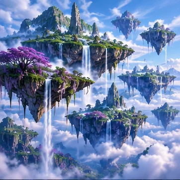

Geografie / interaktivní návrh
Atlas Antirōsu
Zaměř biom, přibliž si mapu a otevři jeho podrobný záznam. Pět kontinentů je schválený počet, jejich tvary a umístění zde zůstávají koncepční.
✦ Průvodce světem
Mapa není finální geografie: podoba pěti kontinentů, pozice biomů a jejich grafické hranice jsou pouze pracovní vizualizací. Nejde o schválené zeměpisné umístění.
Tažením posouváš mapu. Klepnutím vybíráš biom.
✧ 5 kontinentů · 12 biomů · 36 kmenů · pracovní rozložení